2D Unity 자체 제작 게임(+GameServer)
깃허브 링크: https://github.com/starkshn/MMORPG_ClientAndServer

두명의 플레이어가 서버에 접속하여 스킬(칼, 화살)을 사용하여 몬스터를 사냥하고 채팅, 이모티콘 등의 기능을 수행하는 영상을 담았습니다.
>
프로젝트 설명
C#으로 직접 제작한 게임서버를 기반으로 유니티로 제작한 미니 프로젝트입니다.
>
주요목적
클라이언트 ↔ 서버간 동기화 네트워크 통신에 대해 이해를 하고 서버권위 로직에 대해 이해를 하는데 초점을 두었습니다.
>
개발
사용기술 : C#, Unity, Google Protobuf, JSON, XML, Git
제작기간 : 251109~251127
게임서버 프레임 워크 : C# Game Server (TCP)%202a44bccaf9eb80e085a0d8e215b7223b.md)
Git : https://github.com/starkshn/MMORPG_ClientAndServer
구현기능
[클라이언트 작업
- 맵툴 제작
- 맵 자동화 제작
- Player, PlayerAnimation
- Skill System
- AI
[서버 작업]
- 멀티 플레이 테스트 환경 개발
- 이동 동기화 및 스폰 & 디스폰
- 스킬 동기화
- 투사체 동기화
- 데이터 관리
- 이모티콘
- 채팅 기능
- 몬스터
- 서버 & 클라 생성과 연결 및 패킷 전달과정의 전체 흐름 도식화 입니다


멀티 플레이 테스트 환경 툴
- Code
📝 Code
using System.Collections;
using System.Collections.Generic;
using UnityEngine;
using UnityEngine.Tilemaps;
#if UNITY_EDITOR
using UnityEditor;
#endif
public class MultiplayersBuildAndRun
{
#if UNITY_EDITOR
[MenuItem("Tool/Run MultiPlayer/2 Players")]
static void PerformWin64Build2()
{
PerformWin64Build(2);
}
[MenuItem("Tool/Run MultiPlayer/3 Players")]
static void PerformWin64Build3()
{
PerformWin64Build(4);
}
[MenuItem("Tool/Run MultiPlayer/4 Players")]
static void PerformWin64Build4()
{
PerformWin64Build(4);
}
static void PerformWin64Build(int playerCount)
{
EditorUserBuildSettings.SwitchActiveBuildTarget
(BuildTargetGroup.Standalone, BuildTarget.StandaloneWindows);
for (int i = 1; i <= playerCount; i++)
{
BuildPipeline.BuildPlayer(GetScenePaths(), "Build/Win64/" + GetProjectName() + i.ToString() + "/" + GetProjectName() + i.ToString() + ".exe", BuildTarget.StandaloneWindows64, BuildOptions.AutoRunPlayer);
}
}
static string GetProjectName()
{
string[] s = Application.dataPath.Split('/');
return s[s.Length - 2];
}
static string[] GetScenePaths()
{
string[] scenes = new string[EditorBuildSettings.scenes.Length];
for (int i = 0; i < scenes.Length; i++)
{
scenes[i] = EditorBuildSettings.scenes[i].path;
}
return scenes;
}
#endif
}멀티 플레이 환경 테스트를 하기 위해 여러 빌드를 직접 수행하여 테스트를 하는것이 아닌 자동화를 통해 테스트를 할 수 있는 기능입니다.
>
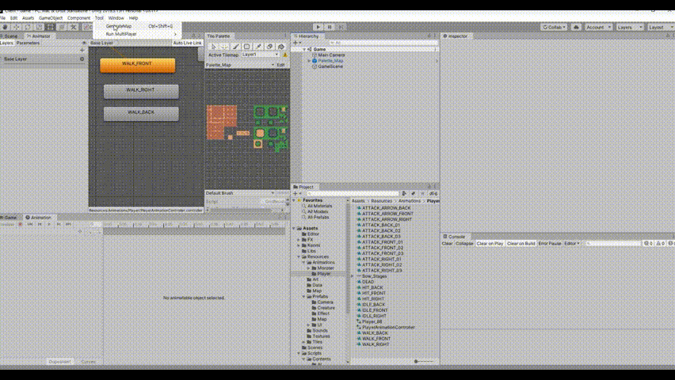
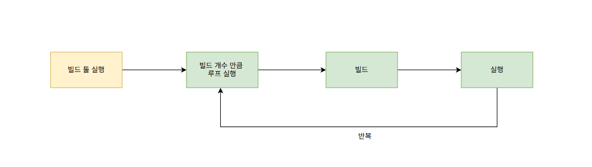
✏️ [설명]
Unity 에디터 상에서 멀티 플레이 실험을 빠르게 하기 위해 한 번의 메뉴 클릭으로 여러 개의 게임 클라이언트를 자동 빌드 & 실행하는 툴을 제작하였습니다.
Unity는 기본적으로 빌드 → 실행을 반복해야하며, 여러 플레이어를 테스트하려면 직접 여러 번 빌드하거나 실행파일을 복사해 따로 켜야하는 번거러움이 있습니다.
이 문제를 해결하기 위해 UnityEditor 상에 2~4명의 플레이어 클라이언트가 자동으로 실행되는 툴을 제작하였습니다.
🛠️ [구현]
4개의 클라이언트를 빌드 툴을 통해 자동으로 실행하여 띄운 결과물입니다.
서버 접속 테스트를 위해 일일히 빌드결과물을 실행하는 것이 아닌 자동화 툴로 실행하여 빠르게 테스트 할 수 있었던 점에서 유의미한 결과물을 도출 하였습니다.
2. 이동 동기화 & 스폰 & 디스폰 동기화
✏️ [기능 설명]
본 프로젝트에서는 서버 권위 기반 이동 동기화 시스템을 구축하여, 클라이언트는 이동 요청만 전송하고 서버가 실제 이동 가능 여부를 검증한 뒤 최종 위치를 브로드캐스트하는 구조를 구현하였습니다. 이동 중 피격 시 위치 끊김이 발생하지 않도록 클라이언트에서는 서버 좌표를 기준으로 보간(interpolation)하여 부드러운 이동을 제공합니다.
>
>
몬스터는 스폰 데이터를 기반으로 서버에서만 생성되며, 패트롤·추적·피격·스킬·사망·부활까지의 전체 AI 루프가 서버에서 동작합니다. 몬스터가 사망하면 일정 시간 후 원래 스폰 지점에서 재생성되며, 특정 반경을 벗어날 경우 자동으로 스폰 위치로 복귀하는 리콜 시스템도 포함하였습니다.
>
이러한 설계는 보안성을 높이고 이동 불일치 문제를 해결하며, 다양한 몬스터 행동 패턴을 안정적으로 관리할 수 있는 구조를 제공하였습니다.
>
- Code
[스폰 기능 동작 방식]
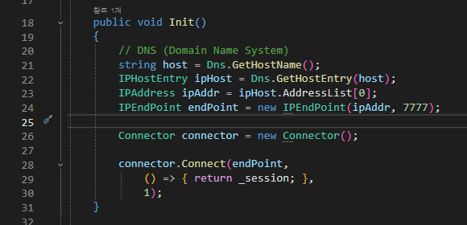
- 클라이언트 → 서버로 접속 시도
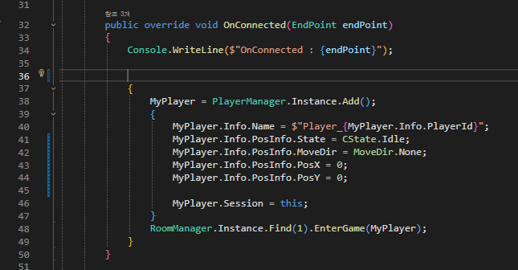
- 서버 : 클라의 접속을 받고 스폰 패킷을 전송
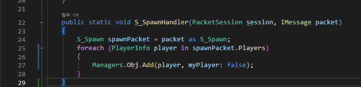
- 서버로 부터 받은 Spawn 패킷을 분석하여 현재 Room에 다른 Player를 생성
[디스폰 동작 방식]
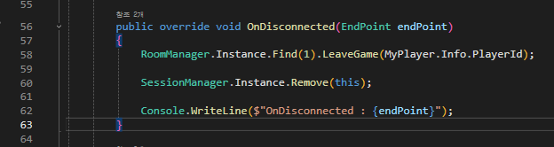
- 서버 : 클라의 연결 끊김을 감지
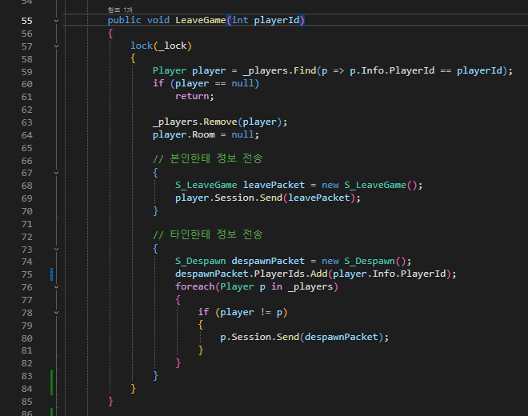
- 서버 : 클라이언트로 해당 Player가 떠났다는 패킷을 전송
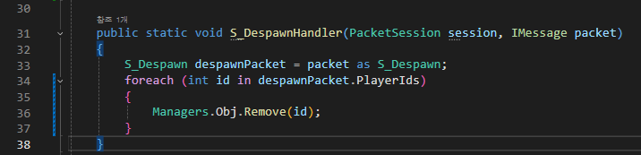
- 클라 : 전달받은 패킷의 데이터를 분석하여 해당 Player를 삭제
[이동 동기화 기능 동작 방식]
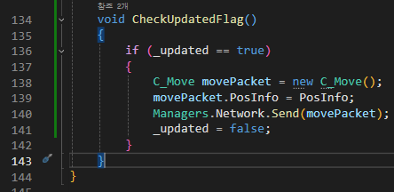
- 이동이 감지되면 위 함수를 호출하여 현재 플레이어 좌표/방향/상태 등을 PosInfo에 담아 Packet을 전송합니다.
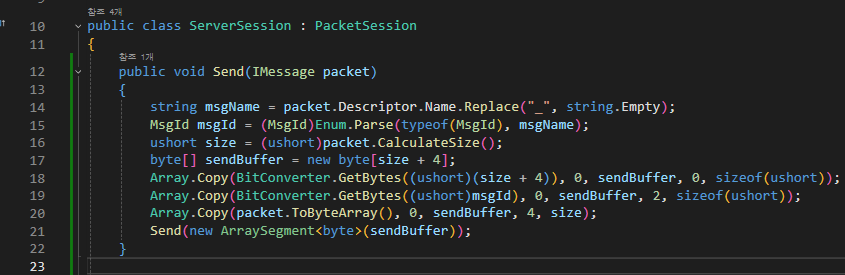
- ServerSession에서 Header에 size와 packet id를 추가하여 서버로 전송합니다.
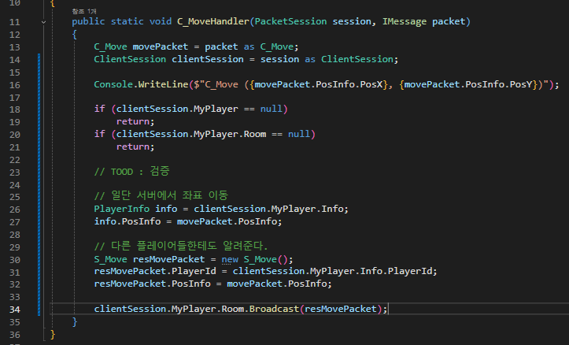
- Server의 PacketHandler부분에서 해당 패킷을 받고 플레이어들에게 Broadcast를 합니다.
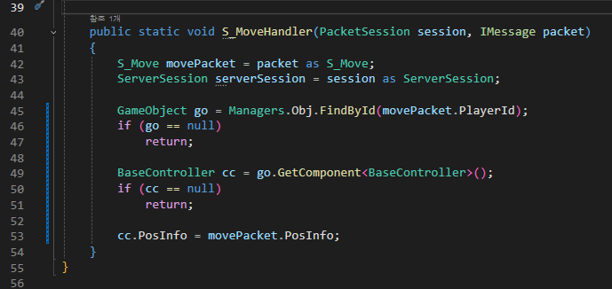
- 클라이언트 쪽에서는 누가 이동했는지에 대한 패킷을 받고 타겟의 Player의 위치/상태/방향 등을 설정합니다.
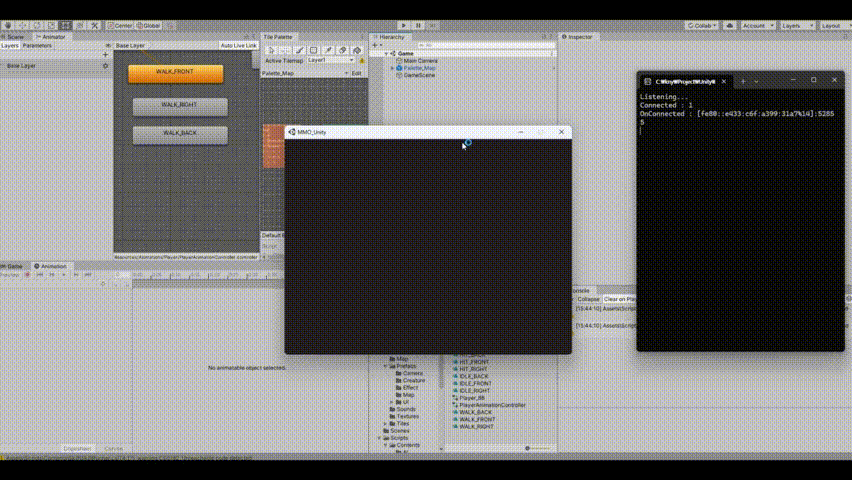
클라이언트 입장과 이동 동기화 결과물
>
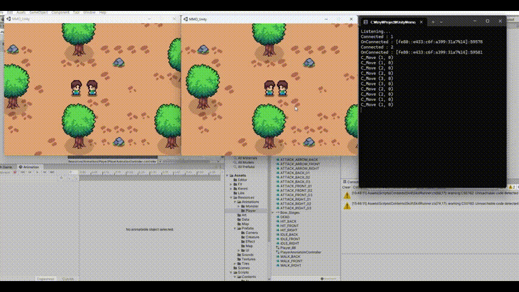
입장 → 이동 동기화 → 연결 끊김 결과물
>
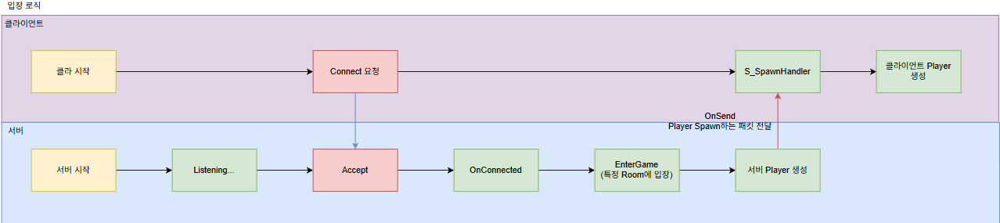
클라이언트 ↔ 서버간의 connect와 Accept에 대한 로직 흐름을 도식화 하였습니다.
>
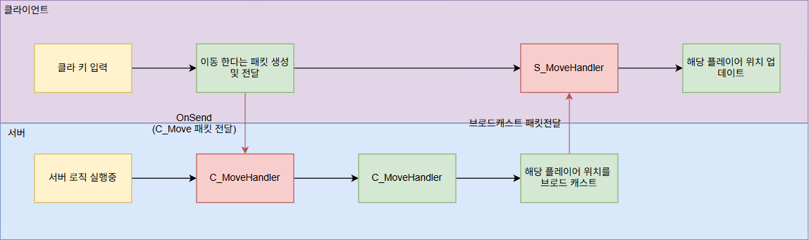
클리이언트 ↔ 서버간 이동 동기화에 대한 흐름을 도식화 하였습니다.
>
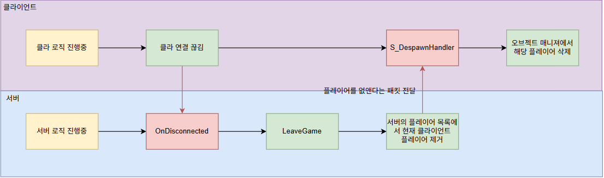
클라이언트 ↔ 서버간 연결 끊김에 대한 도식화를 하였습니다.
>
3. 투사체 동기화
✏️ [기능 설명]
투사체 시스템은 서버 권위 기반으로 설계하여, 서버가 모든 이동 및 충돌 판정을 수행하고 클라이언트는 서버에서 브로드캐스트된 위치를 기반으로 보간하여 부드러운 애니메이션을 표현하는 구조를 구현했습니다.
>
>
빠른 투사체에서도 충돌 누락 문제가 발생하지 않도록 Cell 기반 이동과 명확한 충돌 판정 로직을 적용했으며, 클라이언트에서는 서버 데이터를 신뢰해 렌더링만 수행하도록 하여 보안성과 일관성을 동시에 확보했습니다.
>
이 과정에서 실시간 동기화에 대한 깊은 이해(보간, 예측 불일치, Frame-Tick 차이의 보정)를 얻을 수 있었습니다.
>
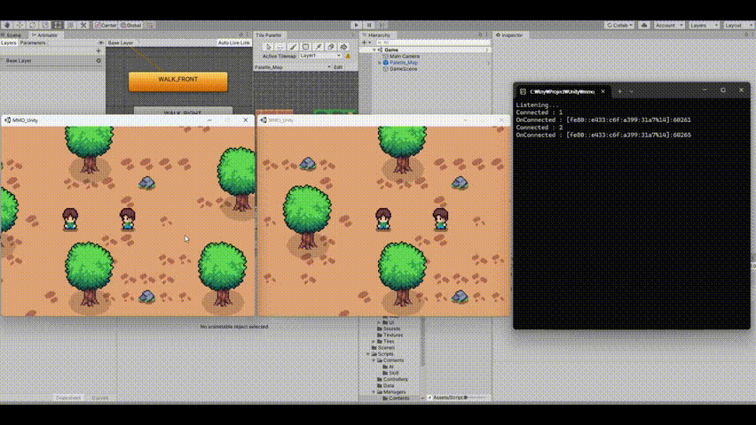
투사체 동기화에 대한 결과물입니다.
>
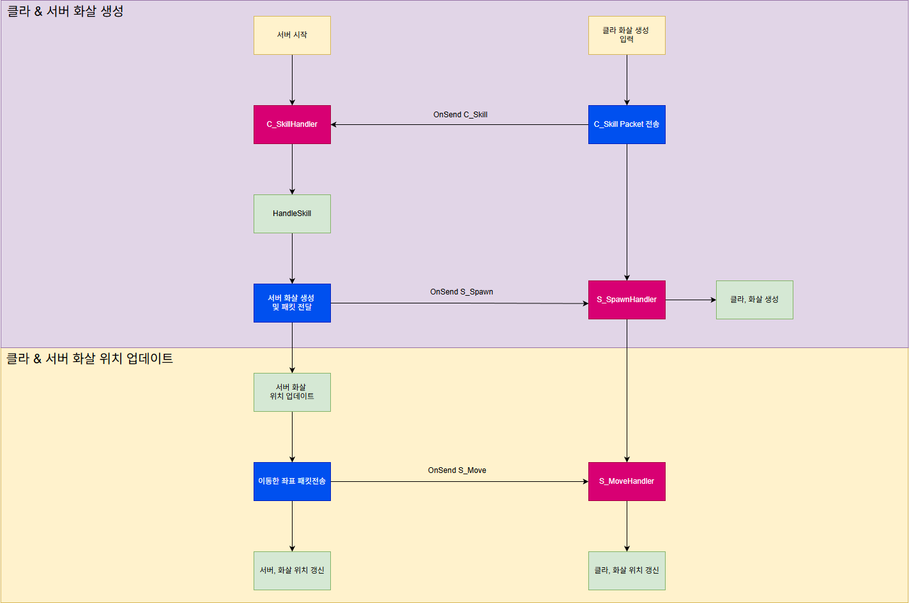
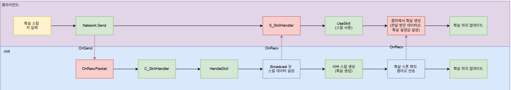
키입력과 동시에 화살을 생성한다는 패킷을 서버로 보내고 해당 패킷을 분석하여 화살을 서버에서도 생성하고 클라이언트에서도 생성할 수 있게하는 로직을 도식화 하였습니다.
>
[코드 흐름 정리]
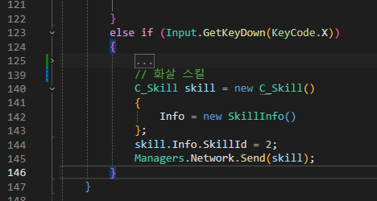
- 화살 스킬을 사용한다고 서버에 패킷을 전송
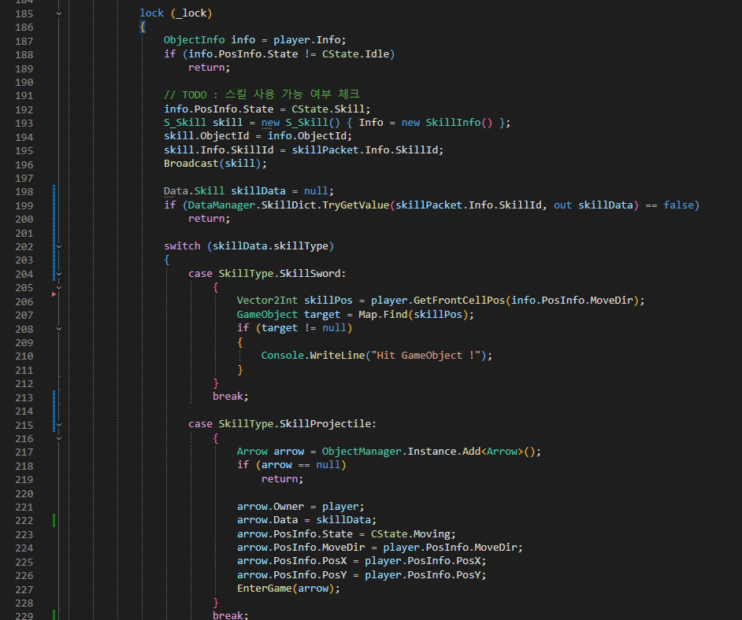
- 패킷을 받고 스킬에 대한 설정값을 데이터 매니져로부터 읽어 들인 값으로 스킬의 데이터를 설정하고 화살 생성 및 클라 패킷 전송
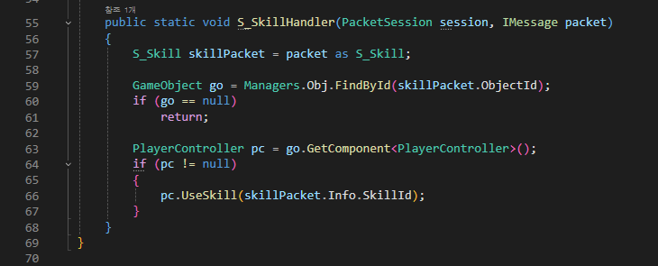
- 스킬을 사용한다는 패킷을 전달 받고 클라의 플레이어 상태 변경 및 스킬 사용 상태로 변경
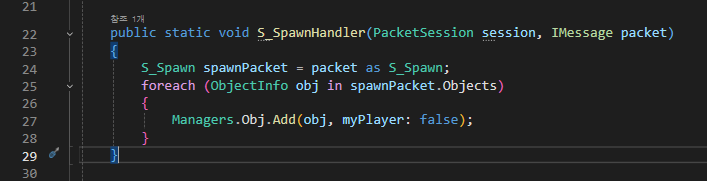
- 화살 스폰 패킷을 전달받고 클라에 화살을 생성
4. 오브젝트 데미지 판정
✏️ [기능 설명]
데미지 판정은 서버 권위 기반으로 설계하여, 공격 객체(플레이어·몬스터·투사체)의 충돌 여부와 피해 계산을 모두 서버에서 수행하고 있습니다.
>
>
서버에서는 공격력, 스킬 계수, 방어력, 상태 이상 등 다양한 전투 요소를 고려해 최종 데미지를 산출하며, 그 결과를 클라이언트로 패킷(S_ChangeHp / S_Dead 등)을 통해 전달합니다.
>
클라이언트는 데미지 계산을 절대 수행하지 않고, 서버에서 수신한 값을 기반으로 HP UI 갱신·피격 애니메이션·사운드·이펙트 등 시각적 처리를 담당합니다.
>
이를 통해 모든 전투 결과가 공정하게 일관되게 유지되며, 클라이언트 조작이나 패킷 변조에 의한 치트 가능성을 완전히 제거할 수 있습니다.
>
실제 구현 과정에서 서버와 클라이언트 간 상태 불일치 문제(HP 지연 반영, 피격 모션 생략 등)를 해결하며, 실시간 전투 동기화에 대한 깊은 이해를 쌓을 수 있었습니다.
>
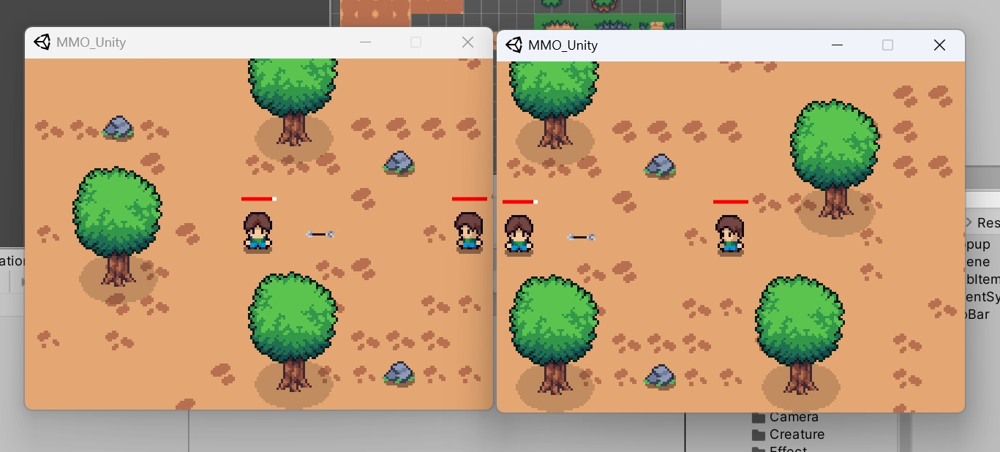
(HpBar 제작은 [](https://www.notion.so/2b74bccaf9eb81a4b973f3c100475022?pvs=21) 이곳에 있습니다)
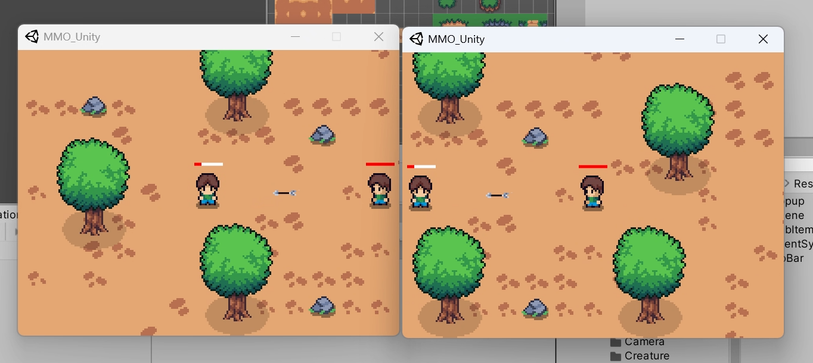
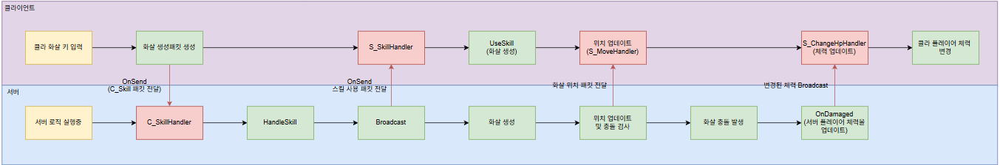
서버와 클라이언트 간의 패킷을 주고 받아 데미지 데이터를 어떻게 사용하는지 도식화 하였습니다.
>
[코드 흐름]
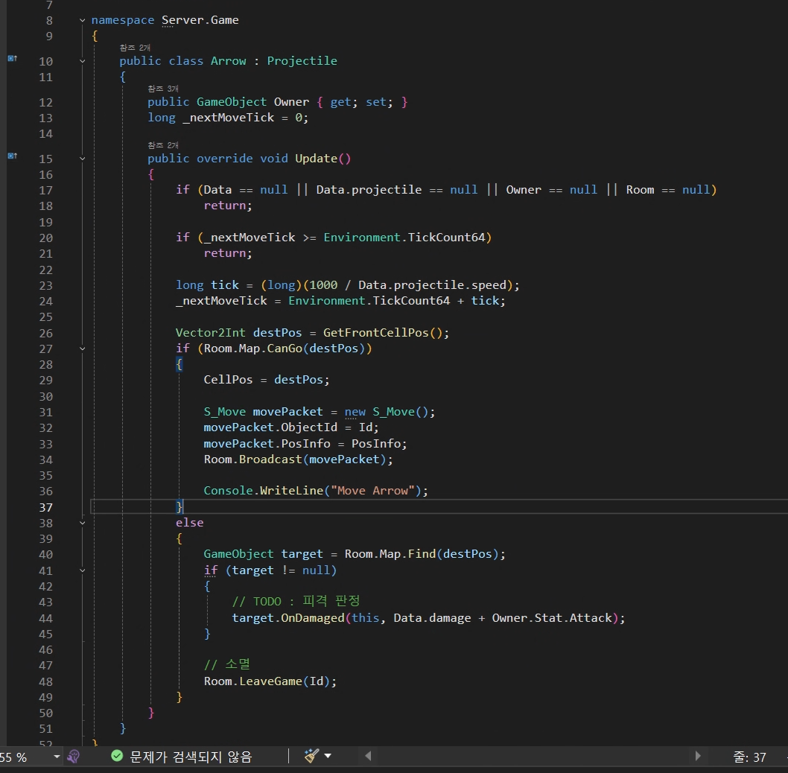
- 화살이 날아가는 서버의 코드입니다. 화살이라는 객체도 서버에 생성하고 위치를 업데이트 시키고, 업데이트 시킨 위치는 클라이언트로 브로드 캣 캐스트 하는 코드입니다.
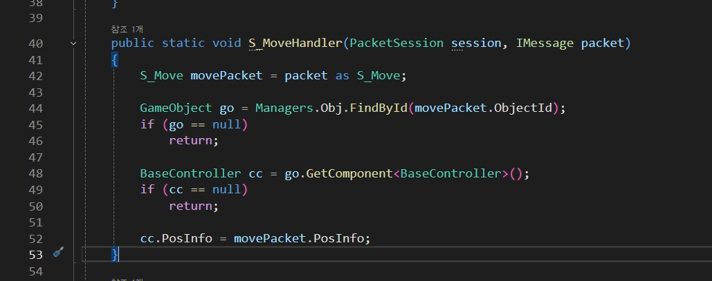
- 클라이언트는 서버로 부터 받은 패킷을 기반으로 클라이언트쪽의 화살 객체의 위치를 업데이트 하는 코드입니다.
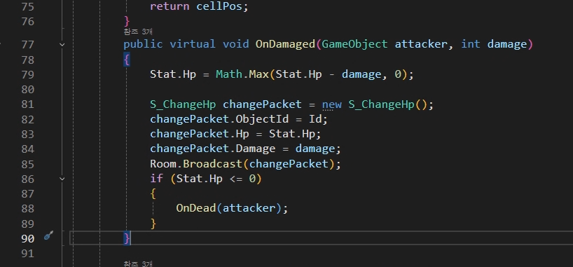
- 서버에서 계산후, 피격이 된경우 체력을 깎는 계산을 하고 해당 패킷을 클라이언트로 브로드 캐스트합니다.
클라이언트는 해당 패킷을 기반으로 클라이언트 해당하는 객체의 데이터를 업데이트 합니다.
5. 오브젝트 죽음 판정
✏️ [구현 설명]
오브젝트의 죽음 판정은 마찬가지로 서버 권위구조로 설계하여, 체력 감소·사망 조건·리스폰까지의 모든 과정을 서버가 단일하게 결정합니다.
>
>
서버는 HP가 0 이하가 되는 순간 즉시 OnDead() 로직을 실행하고, 사망한 오브젝트를 맵에서 제거한 뒤, 사망 패킷(S_Dead)을 룸에 브로드캐스트하여 모든 클라이언트가 동일하게 반영할 수 있도록 합니다.
>
몬스터의 경우 사망 이후 일정 시간이 지나면 서버가 자동으로 리스폰 위치·초기 스탯·상태값(Idle)을 재설정하여 월드에 재배치합니다. 이 과정에서 클라이언트는 서버 상태만 수신하고 따라가기 때문에, 동일한 전투 결과, 동일한 리스폰 타이밍을 모든 플레이어에게 보장할 수 있습니다.
>
이 구조를 구현하면서, 다수 클라이언트가 접속한 환경에서 오브젝트 상태 관리의 일관성·신뢰성을 확보하는 방법을 깊게 이해할 수 있었습니다.
또한 HpBar를 연동하여 체력이 닳는 부분을 좀더 시각화 하였습니다.
>
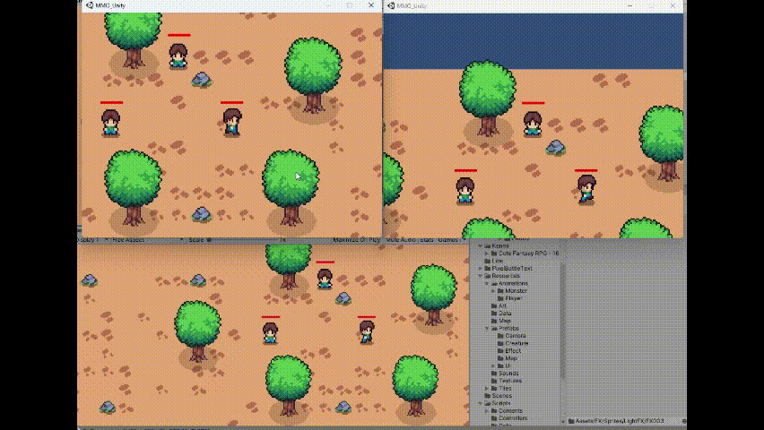
멀티 플레이에서 피격을 받으면 피격 애니매이션 재생을 하고, 플레이어가 죽으면 죽는 애니매이션을 재생하고 맵의 가운데에 리스폰 하는 결과입니다.
>
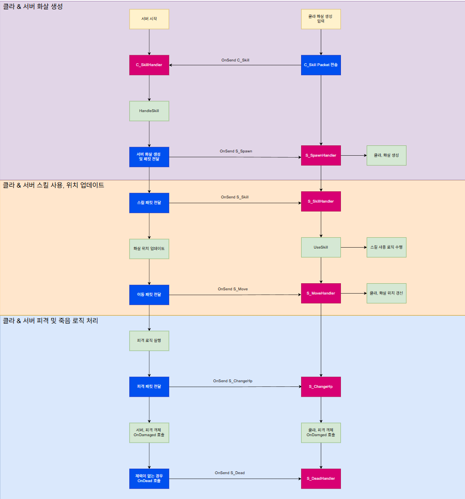
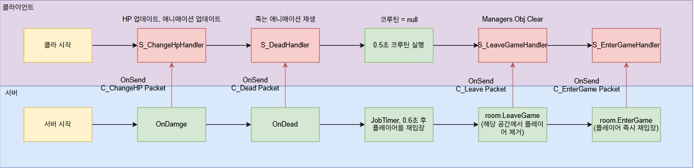
죽는 것 까지의 전체 큰 로직을 정리하였습니다.
서버와 클라이언트간의 투사체 동기화 방식과 부활 → 죽음 → 리스폰 등의 로직흐름에 대해서 이해할 수 있었습니다.
>
[코드]
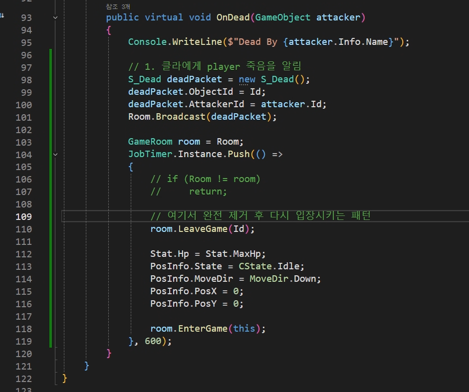
- 죽었다는 패킷을 보내고 JobQueue에 특정시간이 지나고 난 후 람다식을 수행하도록 요청(재입장 요청 람다)
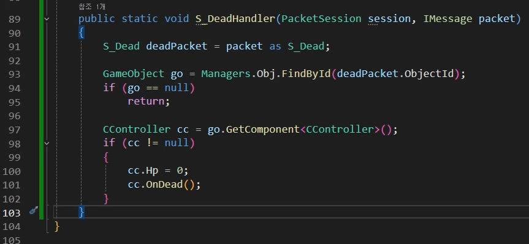
- S_DeadHandler호출후 overridng되어 있는 On Dead를 호출
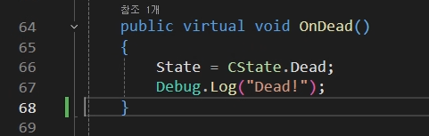
- Dead상태로 변경후, Dead애니매이션 재생
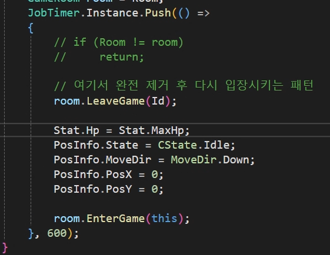
- 0.6초후 플레이어를 방에서 없애고, 즉시 재입장 시키는 로직 수행
6. 이모티콘
✏️ [구현 설명]
플레이어 끼리 상호작용을 수행할 때 이를 이모티콘(Emote) 으로 시각적으로 표현할 수 있도록 설계했습니다.
>
>
몬스터가 플레이어를 발견하면 서버는 “경계 Emote” 이벤트를 발생시키며, 클라이언트는 전달받은 이모티콘 ID를 기반으로 UI 혹은 애니메이션을 출력합니다.
>
이 구조를 통해 클라이언트는 단순히 시각 효과만 표시하고 실제 이모티콘 상태 판단은 서버에서만 수행되기 때문에, 멀티플레이 환경에서도 일관된 이모티콘 연출이 보장되는 것을 이해할 수 있었습니다.
>
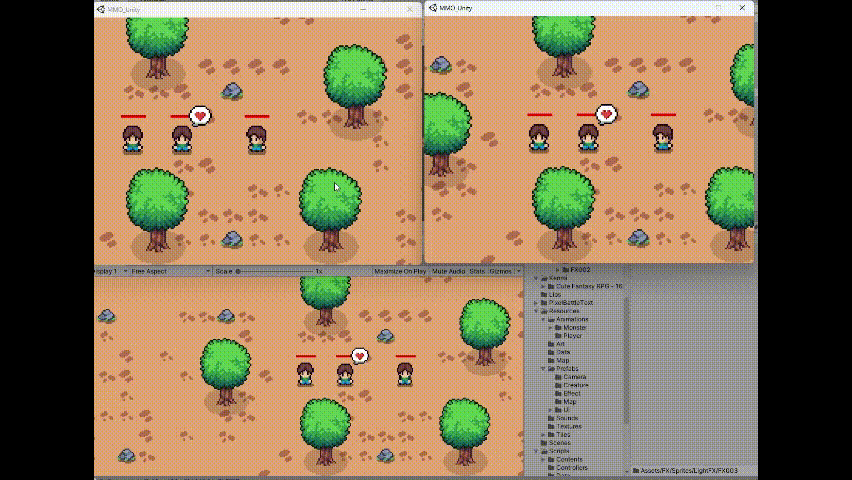
클라이언트1이 이모티콘 보내는 경우 다른 플레이어들이 해당 이모티콘을 볼 수 있는 결과물입니다.
>
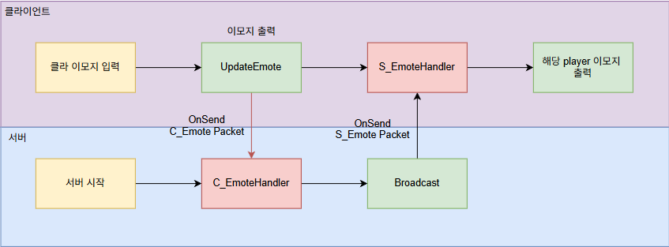
[코드]
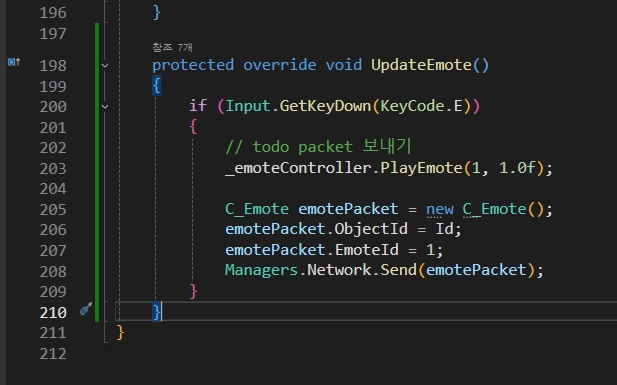
- 클라이언트 : 플레이어 이모티콘 키 입력 및 서버로 패킷전송
(클라이언트에서는 선 이모티콘 재생)
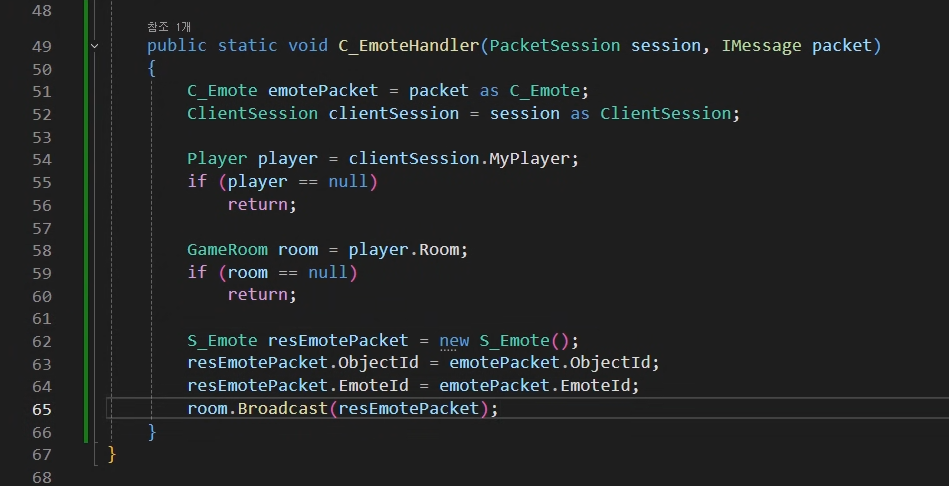
- 서버 : 이모티콘 패킷을 받아 해당 패킷을 보낸 player, emoteId를 다시 Broadcast
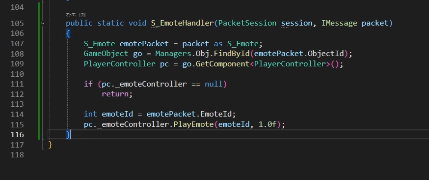
- 클라이언트 : 전달받은 패킷을 기반으로 해당 플레이어에게 이모티콘 재생할 수 있도록 유도
7. 채팅기능
✏️ [구현 설명]
실시간 멀티플레이 환경에서 플레이어 간의 원활한 소통을 위해 서버 기반 채팅 시스템을 구현했습니다.
>
>
클라이언트는 채팅 입력 UI를 통해 사용자가 입력한 메시지를 전달하고, 서버는 이 메시지를 모든 플레이어에게 브로드캐스트하여 신뢰성 있는 채팅 동기화를 보장합니다.
>
서버는 전달받은 채팅 데이터를 즉시 S_Chat 패킷으로 전체 유저에게 전달하며, 클라이언트는 이를 수신해 ChatLog UI에 메시지를 쌓아 올리는 구조로 제작했습니다.
>
UI는 Unity의 ScrollView 및 TextMeshPro를 활용하여 메시지 자동 정렬, 스크롤 자동 최하단 이동, UI 오버플로 방지 등 사용성을 고려한 콘텐츠 표시 방식을 구현했습니다.
>
특히 입력 중에는 ChattingController가 InputField의 포커스를 관리하며 실시간 입력 반영, 엔터키 전송, UI 비활성화 처리 등 UX 전반을 담당하도록 분리 설계하여 유지보수성을 높였습니다.
>
본 기능을 통해 서버–클라이언트 간 데이터 흐름과 UI 렌더링의 연계 구조를 실제로 구현해 보며, 네트워크 메시지 처리, UI 이벤트 핸들링, 사용자 경험 향상 등 다양한 기술 요소를 종합적으로 경험했습니다.
>
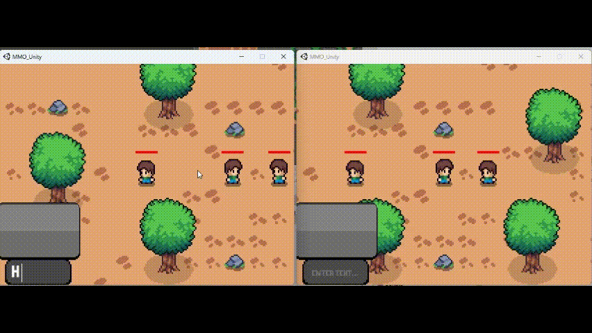
3개의 클라이언트를 멀티플레이 환경에서 접속하여 채팅을 주고 받는 결과물입니다.
>
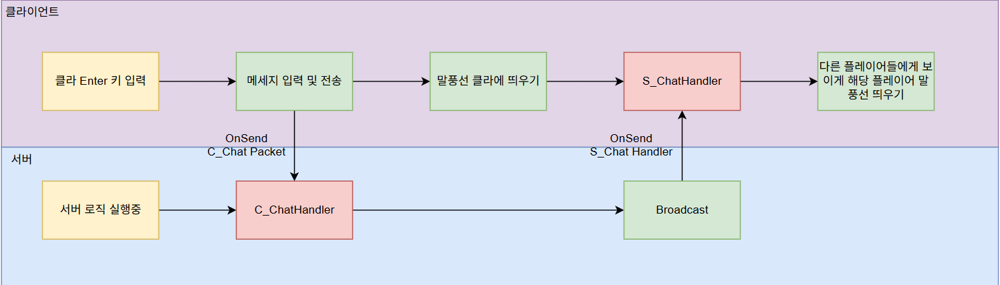
채팅 기능의 패킷 흐름을 도식화 하였습니다.
>
[코드]
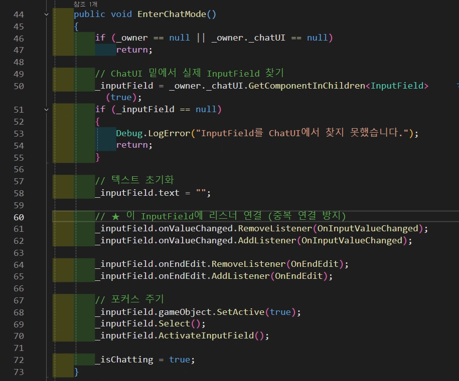
- 클라 : 플레이어 채팅 입력
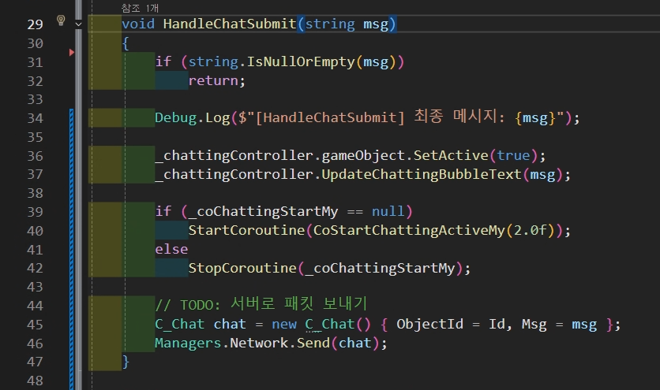
- 클라 : 입력한 채팅 서버로 전송 및 클라이언트 채팅 로직 실행
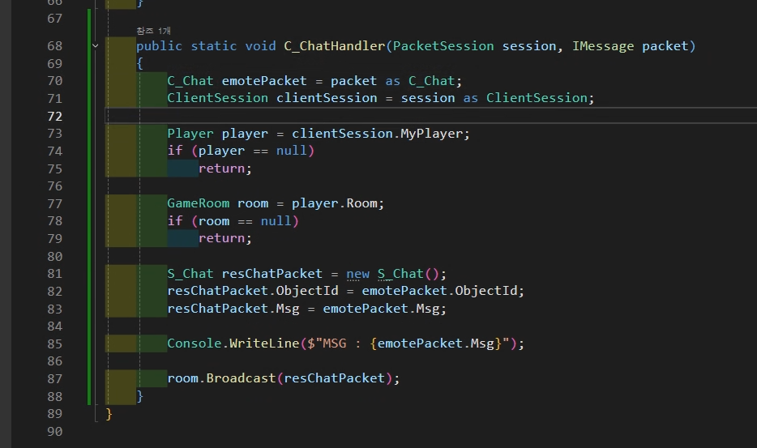
- 서버 : 클라이언트 메세지를 받아서 Broadcast
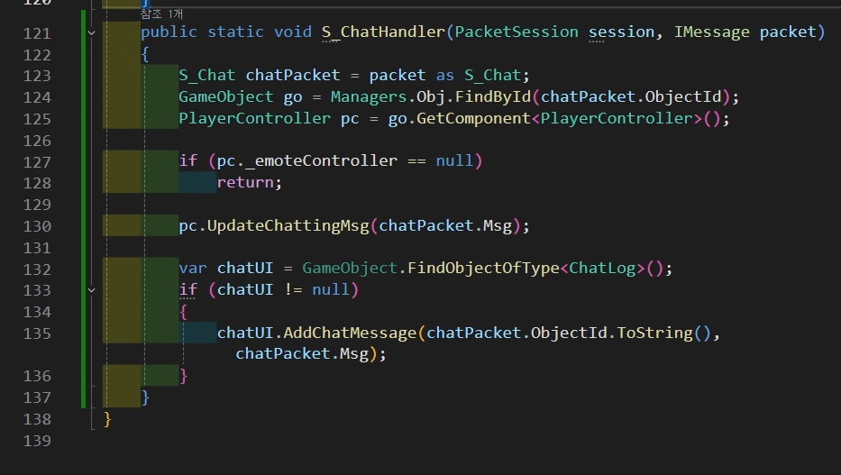
- 클라 : 받은 패킷의 playerId에 해당하는 player 말풍선 및 채팅 띄우기 로직 실행
8. 몬스터
✏️ [구현 설명]
프로젝트에서는 몬스터의 모든 행동을 서버에서 주도하는 Server-Authority 구조의 AI 시스템을 구축하였습니다.
>
>
서버는 일정 Tick(5ms) 기반으로 몬스터의 상태(Idle, Moving, Skill, Hit, Dead)를 업데이트하며, 주변 플레이어 탐색, 스폰 영역 내 패트롤, 목표 추적, A* 기반 경로 탐색, 스킬 공격 등을 수행합니다.
>
특히 몬스터의 이동 및 전투 판정은 모두 서버에서 처리되며, 클라이언트는 서버의 상태와 위치 패킷을 기반으로 보간(Interpolation)하여 자연스러운 애니메이션을 표시합니다. 이 구조는 멀티플레이 환경에서의 위치 불일치 문제를 최소화하고, 치트 대응과 동기화 안정성을 크게 향상시켰습니다.
>
또한 몬스터는 개별 SpawnPoint 데이터를 참조하여 스폰 위치, 패트롤 범위, 리스폰 시간 등을 관리하며, 스폰 지역을 벗어난 경우 자동으로 복귀하는 로직을 구현해 자연스러운 필드 AI를 완성하였습니다.
>
[구현결과]

멀티 플레이 환경에서 서버에서 몬스터를 생성한 후 서버의 몬스터 로직에 따라 클라이언트의 몬스터가 이동하고 상태를 변경하여 플레이어를 쫒아가 죽이고 부활 하는 과정을 담았습니다.
>
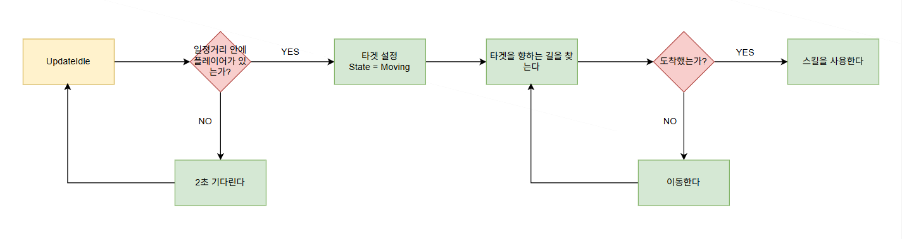
서버의 몬스터 FSM 도식화 입니다.
클라이언트 몬스터의 로직은 무조건 서버 권위에 따라 상태를 설정 및 변경하고 서버에서 내린 명령들만을 수행하도록 하였습니다.
>
[코드]
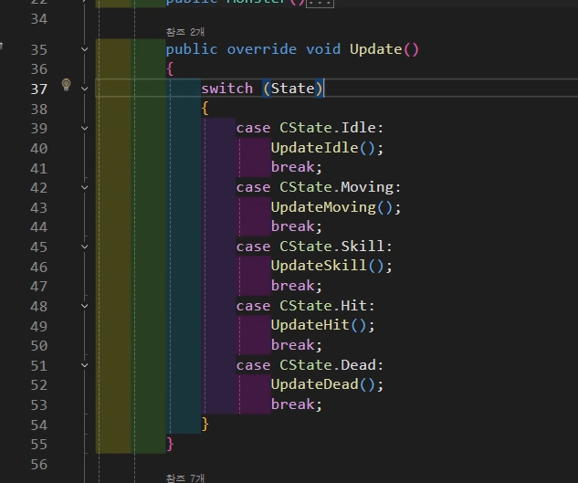
- 서버 : 10ms마다 Update함수를 호출 합니다.
- 서버 : Idle상태일때 일정거리 안에 플레이어가 있다면 Moving으로 상태를 변경합니다.
- 서버 : 움직일 때마다 위치를 Broadcast하고 공격할 수 있는 범위인지 아닌지 확인합니다.
9. Server Config 설정 및 데이터 모델링
- Code
📝 Code
using System;
using System.Collections.Generic;
using System.IO;
using System.Text;
namespace Server.Data
{
public interface ILoader<Key, Value>
{
Dictionary<Key, Value> MakeDict();
}
public class DataManager
{
public static Dictionary<int, Data.Stat> StatDict { get; private set; } = new Dictionary<int, Data.Stat>();
public static Dictionary<int, Data.Skill> SkillDict { get; private set; } = new Dictionary<int, Data.Skill>();
public static void LoadData()
{
StatDict = LoadJson<Data.StatData, int, Data.Stat>("StatData").MakeDict();
SkillDict = LoadJson<Data.SkillData, int, Data.Skill>("SkillData").MakeDict();
}
static Loader LoadJson<Loader, Key, Value>(string path) where Loader : ILoader<Key, Value>
{
string text = File.ReadAllText($"{ConfigManager.Config.dataPath}/{path}.json");
return Newtonsoft.Json.JsonConvert.DeserializeObject<Loader>(text);
}
}
}DataManager
📝 Code
using Google.Protobuf.Protocol;
using System;
using System.Collections.Generic;
using System.Text;
namespace Server.Data
{
#region Stat
[Serializable]
public class Stat
{
public int level;
public int maxHp;
public int attack;
public float speed;
public int totalExp;
}
[Serializable]
public class StatData : ILoader<int, Stat>
{
public List<Stat> stats = new List<Stat>();
public Dictionary<int, Stat> MakeDict()
{
Dictionary<int, Stat> dict = new Dictionary<int, Stat>();
foreach (Stat stat in stats)
dict.Add(stat.level, stat);
return dict;
}
}
#endregion
#region Skill
[Serializable]
public class Skill
{
public int id;
public string name;
public float cooldown;
public int damage;
public SkillType skillType;
public ProjectileInfo projectile;
}
public class ProjectileInfo
{
public string name;
public float speed;
public int range;
public string prefab;
}
[Serializable]
public class SkillData : ILoader<int, Skill>
{
public List<Skill> skills = new List<Skill>();
public Dictionary<int, Skill> MakeDict()
{
Dictionary<int, Skill> dict = new Dictionary<int, Skill>();
foreach (Skill skill in skills)
dict.Add(skill.id, skill);
return dict;
}
}
#endregion
}Data.Contents(데이터 모델링)
[구현 이유]
- 서버에서 데이터를 안정적으로 관리하기 위해서 코드가 아니라, 외부 파일(JSON)으로 관리하는 구조가 필요하다고 느꼈습니다.
- Player의 Stat, Skill에 대한 게임 초기 데이터는 서버 재시작 없이도 파일만 수정하면 해당 데이터를 즉시 반영해야한다고 생각했습니다.
- 서버와 클라이언트가 동일한 데이터를 기준으로 동작해야한다고 생각했습니다.
[결과물]
- 스킬과 스탯에 대한 데이터를 JSON으로 저장
- 서버에서 같은 데이터로 객체를 생성할 수 있게 하기 위한 클래스 정의
- DataManager정의
[역할]
- JSON 데이터 로딩 및 파싱
서버 실행시 StatData.json, SkillData.json 등의 파일을 읽어서 C# 객체 List
- Dictionary 형태로 변환(ILoader 사용)
게임에서 자주 참조하는 데이터를 검색하기 편하도록
📝 Code
Dictionary<int, Skill>
Dictionary<int, Stat>와 같은 해시 기반 딕셔너리 구조로 자동 변환을 해줍니다.
- 서버 로직의 표준 데이터로 사용
공격력 계산, 스킬 쿨타임, 화살 속도/범위, 플레이어 경험치 계산 등 모든 게임 로직의 기준 데이터로 활용됩니다.
맵 자동화 제작
[구현 과정]
Grid객체 산하에 Tilemap들을 계층별로 생성하고 관리하였습니다.
Tilemap_Collision의 경우 Pallet를 활용하여 갈 수 있고 없고의 영역을 칠한다음 이를 텍스트파일로 저장하는 tilemap으로 사용하였습니다.
[도식화]
(갈 수 없는 부분들은 빨간색으로 표시)
스킬 시스템(+콤보 시스템)
- Code
📝 Code
using System;
using System.Collections;
using System.Collections.Generic;
using UnityEditor.VersionControl;
using UnityEngine;
using static Define;
public class SkillRunner : MonoBehaviour
{
public Dictionary<SkillType, List<DirectionalSkillSet>> _skillTables;
Func<MoveDir> _getDir; // Player쪽에서 _lastDir을 넘겨줄 콜백
SkillAsset _currentSkill = null; // 현재 스킬
SkillAsset _expectedSkill = null; // 콤보 기대 스킬
float _lockUntil = 0.0f;
float _comboUntil = 0.0f;
MoveDir _currentSkillDir = MoveDir.Down; // 마지막 스킬 방향
MoveDir _lastSkillDir = MoveDir.Down; // 마지막 스킬 방향
public SkillType CurrentType { get; set; } = SkillType.Sword;
public event Action OnSkillEnded; // ← 종료 알림
int _castSerial = 0;
Coroutine _coSkillEndToPlayer;
Coroutine _coSkillEnd;
int _pressedCount = 0;
// Runner가 어떤 스킬을 골랐는지 알려주기 → Player가 애니 재생
public event Action<SkillAsset, MoveDir> OnSkillStarted;
// Player에서 테이블/방향 콜백 주입
public void Configure(Dictionary<SkillType, DirectionalSkillSet> table, Func<MoveDir> getDir)
{
if (_skillTables == null)
_skillTables = new Dictionary<SkillType, List<DirectionalSkillSet>>();
foreach (var kv in table)
{
List<DirectionalSkillSet> list;
if (!_skillTables.TryGetValue(kv.Key, out list) || list == null)
{
list = new List<DirectionalSkillSet>();
_skillTables[kv.Key] = list;
}
list.Add(kv.Value);
}
_getDir = getDir;
}
// 타입만 넘겨서 시도
public bool TryPlay(SkillType type)
{
switch (type)
{
case SkillType.Sword:
{
bool ret = PlaySwordSkill();
if (ret == true)
{
++_pressedCount;
Debug.Log($"프레스 카운트 : {_pressedCount}");
}
return ret;
}
break;
case SkillType.Arrow:
{
return PlayArrowSkill();
}
break;
}
return false;
}
bool Cast(SkillAsset asset, MoveDir dir, bool isComboSkill = false)
{
// 락/콤보 만료 시각 세팅
_lockUntil = Time.time + Mathf.Max(0f, asset._lockTime);
_comboUntil = Time.time + Mathf.Max(0f, asset._comboInputWindow);
// 다음 콤보 기대 스킬(없으면 null) 설정
_currentSkill = asset;
_expectedSkill = asset._nextOnCombo;
_lastSkillDir = _currentSkillDir;
_currentSkillDir = dir;
OnSkillStarted?.Invoke(asset, dir);
_castSerial++;
if (_coSkillEndToPlayer != null)
StopCoroutine(_coSkillEndToPlayer);
if (isComboSkill == true)
{
if (_coSkillEnd != null)
StopCoroutine(_coSkillEnd);
_coSkillEnd = StartCoroutine(CoEndAfter(0.5f));
}
_coSkillEndToPlayer = StartCoroutine(CoEndAfterToPlayer(_castSerial, asset._lockTime));
return true;
}
IEnumerator CoEndAfterToPlayer(int serial, float delay)
{
yield return new WaitForSeconds(delay);
// 캐스트가 중간에 다른 스킬로 바뀌었으면 무시
if (serial != _castSerial)
yield break;
OnSkillEnded?.Invoke();
}
IEnumerator CoEndAfter(float delay)
{
yield return new WaitForSeconds(delay);
// 락만 해제 (콤보 입력창은 자연 소멸되도록 유지)
_lockUntil = 0.0f;
_comboUntil = 0.0f;
_pressedCount = 0;
}
// ---- 핵심: 현재 타입에서 DirectionalSkillSet 하나를 "찾아" 선택하는 헬퍼 ----
// index 파라미터로 어떤 세트를 쓸지 결정 (기본 0: 첫 번째 세트)
bool TryGetSet(SkillType type, out DirectionalSkillSet set, int index = 0)
{
set = null;
if (_skillTables == null) return false;
if (!_skillTables.TryGetValue(type, out var list) || list == null || list.Count == 0)
return false;
// 인덱스 보호: 범위를 벗어나면 0으로 보정 (원하면 다른 정책 적용 가능)
if (index < 0 || index >= list.Count)
index = 0;
set = list[index];
return set != null;
}
private bool PlaySwordSkill()
{
// Sword용 세트 하나 선택 (필요하면 인덱스를 상태/장비에 따라 바꾸세요)
if (!TryGetSet(SkillType.Sword, out var set))
return false;
// 현재 입력 순간의 방향 스냅샷
MoveDir nowDir = SafeDir();
SkillAsset entrySkill = set.GetEntry(nowDir);
// 방향이 같은 경우
if (nowDir == _currentSkillDir)
{
if (_pressedCount == 0)
{
// 첫타
Debug.Log("첫타");
return Cast(entrySkill, nowDir, true);
}
else
{
// 락 걸려있는 시간보다는 크거나 같고 && 콤보 가능한 시간보다는 작거나 같은 경우 => 콤보가 가능하다.
if (Time.time <= _comboUntil && _currentSkill._nextOnCombo != null)
{
Debug.Log($"콤보 가능 {_pressedCount}");
return Cast(_currentSkill._nextOnCombo, nowDir, true);
}
else
{
// 콤보가 불가능
Debug.Log("콤보 불가능");
}
}
}
else
{
// 이전에 스킬을 사용한 방향과 현재 방향이 다른경우 무조건 첫타 부터 실행한다.
_pressedCount = 0;
Debug.Log("방향을 바꾸고 첫타");
return Cast(entrySkill, nowDir, true);
}
return false;
}
private bool PlayArrowSkill()
{
if (Time.time <= _lockUntil)
return false;
if (!TryGetSet(SkillType.Arrow, out var set))
return false;
// 현재 입력 순간의 방향 스냅샷
MoveDir nowDir = SafeDir();
SkillAsset entrySkill = set.GetEntry(nowDir);
return Cast(entrySkill, nowDir);
}
MoveDir SafeDir() => _getDir != null ? _getDir() : MoveDir.Down;
public void Cancel()
{
_expectedSkill = null;
_lockUntil = _comboUntil = 0f;
}
}Single Responsibility Principle(SRP)원칙을 적용하여 플레이어 코드는 플레이어 코드만 신경쓸 수 있게하고, 스킬은 스킬 로직을 따로 분리하여 기능을 구현하였습니다.
>
[문제]
플레이어 클래스 내부에 스킬 로직(콤보/락/애니 제어)이 섞여 유지보수가 어려움.
[해결]
관심사 분리와 데이터 주도 설계를 적용해 스킬을 모듈화.
- SkillAsset(ScriptableObject): 스킬 메타데이터(애니 상태명, 락 시간, 콤보 입력 창, 다음 콤보 참조).
- SkillRunner(MonoBehaviour): 입력 시점의 방향과 타임스탬프(락/콤보)를 바탕으로 스킬 캐스팅/콤보 판정.
- Player: 입력 수집과 이동/표현만 담당. 스킬 실행은 SkillRunner.TryPlay() 호출로 위임.
[얻은 효과]
- 스킬 추가/수정 시 코드 수정 최소화(애셋 교체/추가로 대응).
- 플레이어 코드 간결화 및 테스트 용이성 향상.
- 콤보/락 규칙 변경도 SkillRunner 한 곳에서 관리 → 유지보수 비용 감소.
[스킬 관계도]
[스킬 Flow]
AI
Patrol 기능
- Code
[개요]
- 목표 : 격자 기반 2D게임에서 몬스터가 대기 → 임의 목적지 설정 → 한 칸씩 이동 → 도착 후 재탐색으로 순찰하는 AI구현
- 핵심 포인트 : 이동/표현/상태는 BaseController, 순찰 로직은 MonsterController로 관심사 분리
[구현한 이유]
- 문제 : 단순 랜덤 워크는 벽/장애물에 자주 걸리고, 목적 없이 흔들려 보이는 문제가 있음
- 요구 : 플레이어 주변의 맵 구조를 고려해 그럴 듯한 순찰 루프를 만들고싶었습니다.
- 상태 기계(FSM) : Idle/Moving/Dead로 단순화 → 디버깅 용이
- 관심사 분리
- BaseController = 이동/애니매이션/상태 전환 공통부
- MonsterController : 목적지 선정 + 한 칸 전진에 대한 책임
- 코루틴 사용 : 대기와 목적지 선택을 CoPatrol로 분리
- 충돌/통로 확인 : Managers.Map.Cango/Managers.Obj.Find로 이동 가능칸만 사용
[다이어 그램]
감사합니다 🙂